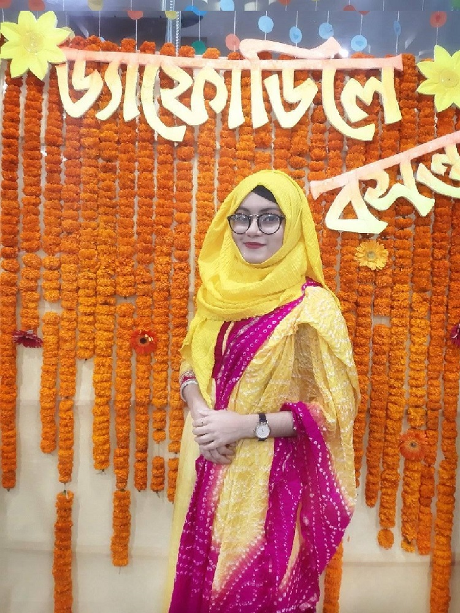

Hi! I'm Mst.Rakibun AktarTithee
I am studying at DIU in CSE.As an engineering student my goal is to become an expert web developer.I'm passionate about my work and I never lose hope.I'm a workaholic person and always gets my work done on time.I try to learn more and more and also try to improve myself day by day.Insha Allah oneday i will fulfill my goal.
Visit My Website
My Picture

Set a goal
that works
for successful career development
Lifestyle
About me and my activities
My name is Mst.Rakibun Aktar Tithee. I'm a studying BSc in Computer Science and Engineering at Daffodil International University.This portfolio is a representation of all that I have learnt or learning as a student. I first learned how to program back in high school in 10th grade. I am very passionate about programming and engineering as a whole I also interested in Web design and development. I primarily work on the backend and I am very fond of complex systems that require critical thinking skills and logic. Though, I am flexible and have worked in the frontend as well!
I have had experience in different languages, frameworks, database systems, etc. In terms of programming languages, I primarily work in Java but have used other languages such as java, C,C++ , etc. and in web design and development I have learnt in frontend Html,CSS,CSS3,Bootstrap,Javascript,wordpress etc. And for backend I have learnt PHP laravel. I'm dedicated to growing as an engineer and as an individual. I thrive in environments that allow me to develop my skillset on a continuous basis.
Besides all this I love to do photography and videography in my leisure-time these are my hobbies. I have a bigger vision to do something big in my life by the grace of Almighty Allah one day I'll be succeeded to fullfill my dreams.